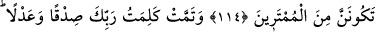
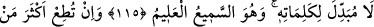
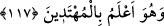

ALLAH’IN KİTABI VARKEN
BAŞKA HAKEM ARAMAMAK
114. (De ki): Allah’dan başka bir hakem mi arayacağım? Halbuki size Kitab’ı
açık olarak indiren O’dur. Kendilerine kitap verdiğimiz kimseler, Kur’an’ın
gerçekten Rabbin tarafından indirilmiş olduğunu bilirler. Sakın şüpheye
düşenlerden olma!
115. Rabbinin sözü, doğruluk ve adalet bakımından tamamlanmıştır. O’nun
sözlerini değiştirecek kimse yoktur. O işitendir, bilendir.
116. Yeryüzünde bulunanların çoğuna uyacak olursan, seni Allah’ın yolundan
saptırırlar. Onlar zandan başka bir şeye tâbi olmaz, yalandan başka söz de
söylemezler.
117. Muhakkak ki senin Rabbin, evet O, kendi yolundan sapanı en iyi bilendir. O,
doğru yolda gidenleri de iyi bilendir.
Rivayete göre Mekke müşrikleri: “Ey Muhammed, seninle bizim aramızda yahudi
âlimlerinden veya hıristiyan piskoposlarından birini hakem seç. Kimin hak ehli, kimin
bâtıl ehli olduğuna karar versin. Çünkü onlar senden önce nazil olan kitapları
okumaktadırlar.” dediler. Bunun üzerine bu ayet nâzil oldu.
“Allah, size Kitab’ı açıklanmış olarak indirmiş iken” Yani siz neyi yapıp neyi
yapmayacağınızı bilmeyen ümmî bir toplum olduğunuz halde Allah Teâlâ size hakkı ve
doğruyu söyleyen Kur’an’ı indirdi.
Kitab’ın açıklanmış olarak indirilmesinden maksat, içinde hak, bâtıl, helâl, haram ve
diğer hükümlerin açıklanmış olmasıdır. Din konusunda hiçbir hüküm karışık ve mübhem
bırakılmamıştır. Bundan sonra başka hakem aramaya ne ihtiyaç vardır? Senin de
gördüğün gibi Kur’an-ı Kerîm açıklaması ve tafsîlâtı ile din konusunda yeterli ve